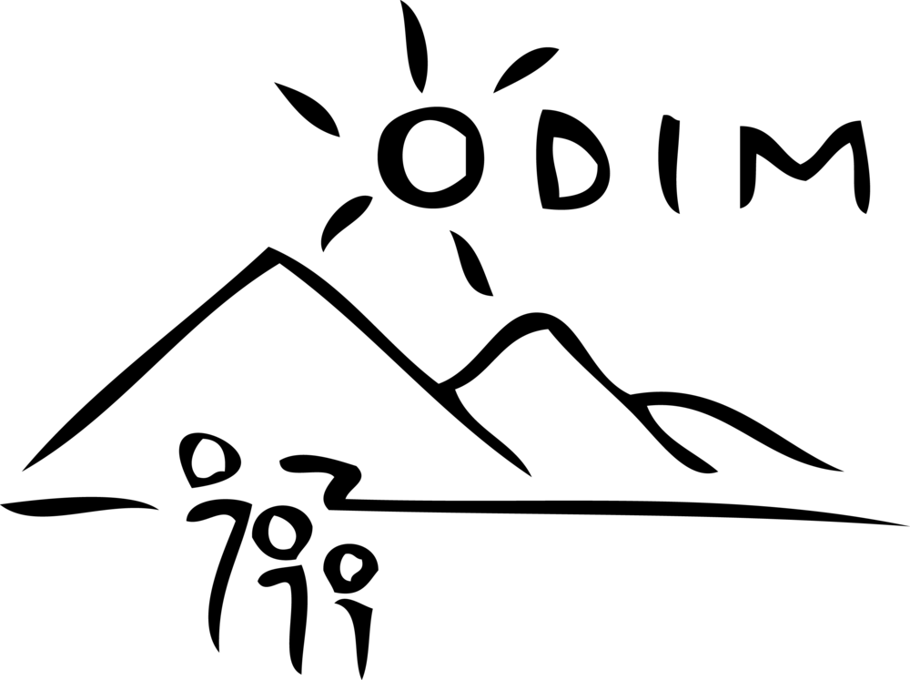
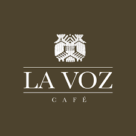

A Website Design: Sunken City Coffee
December 2020

Project overview 📝
In my consumer marketing class, each group was tasked with forming a pop-up company to brand, market, and sell coffee that had been imported from Guatemala. We partnered with the coffee processing co-op in San Juan La Laguna, La Voz, and donated all profits to the Organization for the Development of the Indigenous Maya (ODIM). ODIM is a non-profit organization whose mission is to enable access to healthcare and preventative health education for the population, with equality, honesty, and confidentiality, that is focused on programs that promote the development and empowerment of the communities of San Pablo La Laguna and San Juan La Laguna. We created the branding for the coffee, a social media platform to advertise it, and a website to sell it. With our website, we raised over $2000 in five days.
Partners:
 Challenge 🧗♀️
Goal
Create a website and sell all of our coffee within one week of publishing the website and raise $5000 as a class.
Constraints
We had two weeks to complete the entire project, including branding, building our website, advertising, and selling. This compressed timeline had an impact on the level of depth and quality we were able to achieve for our website and marketing efforts, and it made it more difficult to effectively convey our unique story and message to potential customers at first glance, but we were able to have a positive impact on the community and achieved the project goals.
Team Roles
For this project, I fulfilled both the roles of website manager and creative. I developed and maintained the website, including e-commerce functionality, and generated content for the website and brand story.
Research 🔬
Conducting research on our target audience as well as La Voz and ODIM was essential for crafting a compelling story that would encourage customers to purchase our coffee and donate.
Audience
Given that we were selling coffee during the holiday season in December, I focused on coffee lovers and their families who may consider purchasing our coffee as a gift. I also aimed to leverage the holiday spirit of giving to target individuals who cared about social causes.
Competition
Our competition were other student teams in the class and established coffee brands like Starbucks and Peet's.
Interviews
We met with the leaders of ODIM to gain a better understanding of the non-profit organization and the communities of San Pablo La Laguna and San Juan La Laguna. This was crucial for crafting a compelling narrative.
Design process 💭
Initially, I planned to use a website template provided by Wix due to time constraints. However, I found that none of them were suitable. They all had a modern and minimalistic designs that did not align with the message we wanted to convey to customers. Many of them felt too generic and were geared towards online clothing shops, with a strict and impersonal aesthetic. In order to stand out, we needed to take a more personalized approach. Instead of just selling coffee, we aimed to sell our story and the unique tales of Guatemala, emphasizing the social impact of the purchase. I wanted customers to connect with the cause and feel that they were contributing to something meaningful, beyond just buying a bag of coffee. So, I decided to build the website from scratch.
- First, I created a basic wireframe for the website. After feedback from team members about the information architecture, I began gathering photos from both La Voz and ODIM that I could use on the website.
- Next, I chose an earthy and warm color palette to use. I wanted the colors to evoke feelings of “coffee”, “community”, and “growth”.
- Afterwards, I began writing content for the website. I focused on the tradtional Mayan methods they used and where they grow and harvest their coffee. We also came across a story about a Mayan ceremonial site where they held important rituals and we named our brand after them, the Sunken City.
- In the end, I still wasn't convinced by our own storytelling and I came up with the idea to introduce the team and share our morning coffee rituals. This "About the Team" page gave our website more personality and connected us with our target audience.
- Finally, I had users test the website on different devices such as a laptop and phone to ensure its intuitiveness and ease of use, making minor edits based on their feedback.
Final design 💡


Impact 📈
Our team achieved remarkable success with our coffee campaign, selling out all the coffee in just five days. We outperformed all the other teams in the class and, as a result, raised over $2000 in profit. As a class together, we were able to reach our overall goal of $5000 which was donated to ODIM.Lessons Learned ✍️
Despite not being a product design project, I gained valuable skills that are transferable to such projects. If I were to undertake this project again with more time, I would prioritize spending more time on user research, the design process, and usability testing. At the time, my knowledge of design principles, wireframing, and prototyping was limited, so I relied more on aesthetics, personal preference, and storytelling. Moving forward, I aim to conduct more user research to understand users pain points and create a more visually appealing and intuitive interface using the design principles I have learned.
This project highlighted the importance of telling a compelling story and using it to differentiate our product or service. By telling the story of the communities in Guatemala and their coffee, the team was able to create a better user experience by making meaningful connections with our customers and stand out from the competition.
It was also a team effort and demonstrated the value of collaborating and working together towards a common goal. By leveraging each team member's strengths, we were able to create a successful campaign and website. The team encountered many challenges during the project, such as time limitations and the unavailability of certain resources, which taught me the importance of being flexible and adaptable in finding alternative solutions and approaches.